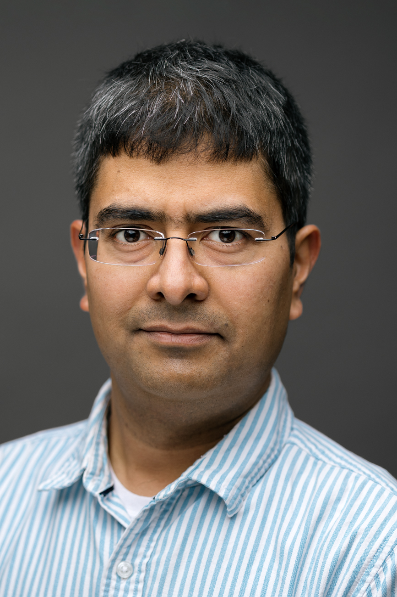

Aniket Basu Roy
|  | I am a Computer Science researcher affiliated to BITS Pilani Goa as an Assistant Professor. Before this, I was a postdoc in Aarhus, Paris, and Montpellier. I defended my Ph.D. thesis at the Indian Institute of Science, Bangalore. |
Research
My broad research interests lie in Theoretical Computer Science, specifically in Discrete and Computational Geometry. List of Preprints/Publication
Teaching
I am teaching CS F430 Approximation Algorithms from January 2025.
Contact
Office D-256
BITS Pilani K K Birla Goa Campus
NH 17B Bypass Road, Zuarinagar
Goa 403726
Phone: (+91) 832 258 0897
Email: aniketr AT goa.bits-pilani.ac.in | aniket.basu.roy AT gmail.com